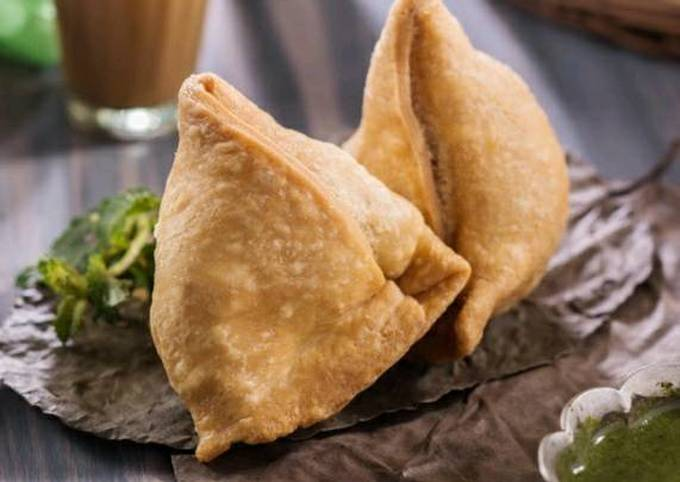

Samosa Recipie

Description
Samosa is a popular Indian snack that is made with a triangular pastry filled with a savory potato and pea mixture.
It is a deep-fried snack that is often served with chutneys or sauces.
Ingredients
Ingredients for dough:
- 2 cups all-purpose flour
- 1 teaspoon carom seeds
- 1/4 teaspoon salt
- 4 tablespoons + 1 teaspoon oil
- water to knead the dough, around 6 tablespoons
Ingredients for the filling:
- 3-4 medium potatoes, boiled and mashed
- 1/2 cup green peas
- 1 teaspoon cumin powder
- 1/2 teaspoon coriander powder
- 1/2 teaspoon garam masala
- 1/4 teaspoon red chili powder
- 1/2 teaspoon salt
- 1/4 teaspoon black pepper
- 1 tablespoon oil
- 1/2 teaspoon ginger-garlic paste
- 1 green chili, chopped
Steps:
- To make the dough, combine the flour, carom seeds, salt, and oil in a large bowl.
- Rub the oil into the flour with your fingertips until it resembles breadcrumbs.
- Add water, a little at a time, and knead the dough until it is smooth and elastic.
- Cover the dough with a damp cloth and let it rest for 30 minutes.
- To make the filling, heat the oil in a large skillet over medium heat.
- Add the ginger-garlic paste and cook for 1 minute, or until fragrant.
- Add the green chili and cook for 30 seconds more.
- Add the potatoes, green peas, cumin powder, coriander powder, garam masala, red chili powder, salt, and black pepper.
- Cook for 5-7 minutes, or until the potatoes are heated through.
- Once the dough has rested, divide it into 12 equal pieces.
- Roll out each piece of dough into a 6-inch circle.
- Place 1/4 cup of the filling in the center of each circle.
- Fold the dough over the filling to form a triangle.
- Seal the edges of the triangle with a fork.
- Heat the oil in a large skillet over medium heat.
- Fry the samosas in batches for 2-3 minutes per side, or until golden brown and crispy.
- Serve hot with chutneys or sauces.
Back to Home Page